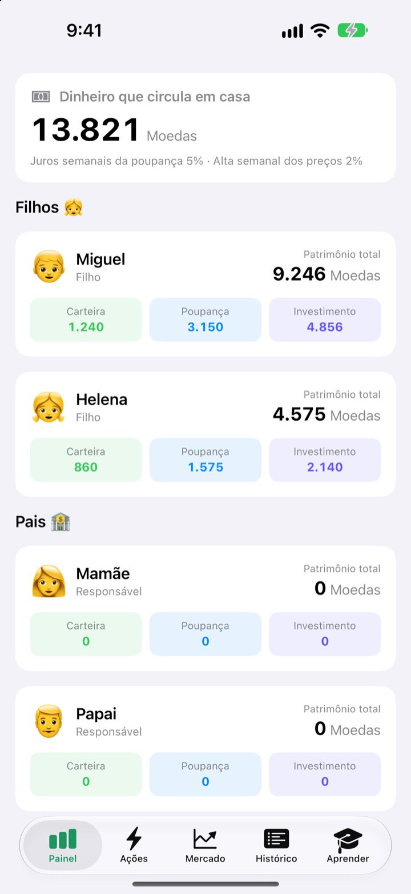
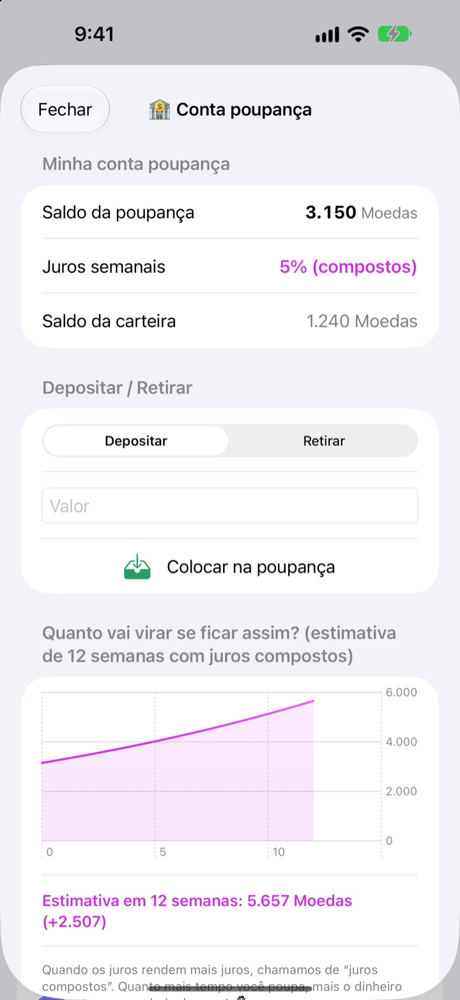
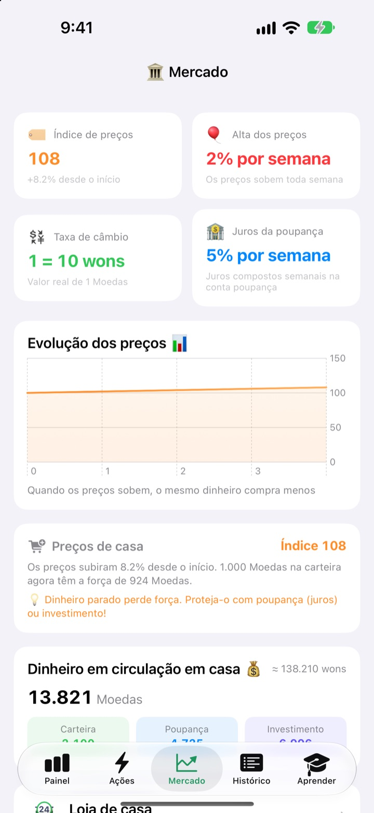
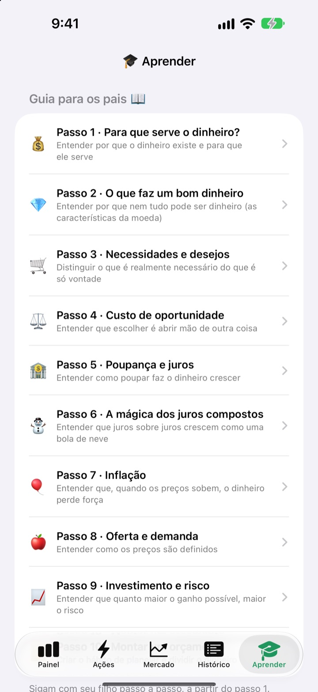

O dia da mesada vira
uma aula sobre dinheiro
Você é o banco central da família, e seus filhos são os clientes. Eles recebem a mesada na moeda de vocês, compram o lanchinho, veem os juros caírem na poupança e sentem o sobe e desce de um fundo de treino.
Todos os recursos são grátis. Nenhum dinheiro de verdade troca de mãos.

Onde você guardaria 1.000 moedas?
As mesmas 1.000 moedas estão na carteira, na poupança e em três fundos. Avance uma semana de cada vez e veja o que acontece com cada uma. Tudo segue as mesmas regras do app.
"Guarde que ele cresce": será que a criança entende mesmo?
Juros, juros compostos, inflação: quanto mais você explica, mais distante parece. No SukSuk Mesada, a criança ganha, gasta e espera por conta própria. Quando ela percebe que a poupança da semana passada rendeu juros, a próxima mesada vai direto para a poupança.
A paciência aparece no saldo
O dinheiro na poupança rende juros compostos toda semana. Você define a taxa, e um gráfico mostra quanto ele vai virar em 12 semanas se ninguém mexer.
Ficou uns dias sem abrir? Quando o app abre, todas as semanas em atraso são pagas de uma vez.

Veja os preços comerem a carteira
A aba Mercado reúne numa tela só o índice de preços da família, a inflação, a taxa de juros, o dinheiro em circulação e os preços dos fundos. Conforme os preços sobem, ela mostra quanto menos 1.000 moedas na carteira conseguem comprar.
A criança vê em números simples que dinheiro parado encolhe, e dinheiro poupado ou investido se mantém.

Dez conversas para ter juntos
O guia para os pais conduz você em dez passos: por que precisamos de dinheiro, necessidades e desejos, custo de oportunidade, poupança e juros, juros compostos, inflação, investimento e risco, até montar um orçamento.
Uma calculadora de juros compostos e uma calculadora de experimento de preços deixam vocês mudar os números e ver o que acontece.

Três passos para começar
- 1
Dê um nome à moeda
Feijões, Estrelas, Moedas: como a família quiser chamar.
- 2
Crie um PIN dos pais
Quatro dígitos. Só quem sabe o PIN pode dar mesada ou mudar os ajustes do banco.
- 3
Adicione a família
Adicione os filhos e os pais, dê a primeira mesada e pronto.
O que fica onde
- Painel
- Carteira, poupança e investimentos de todo mundo num relance
- Ações
- Dar ou descontar mesada, Código de barras do item, Adicionar item, Convidar filho, Modo celular do filho, Ajustes do banco (exige o PIN dos pais)
- Mercado
- Índice de preços, inflação, taxa de câmbio, juros da poupança, dinheiro em circulação, preços dos fundos
- Histórico
- Cada movimentação de dinheiro por data, por membro ou por tipo
- Aprender
- Guia para os pais em dez passos, calculadora de juros compostos, calculadora de experimento de preços
- 🐢 Fundo Tartaruga Seguro
- Oscila pouco no dia a dia, sobe devagar e sempre
- 🐰 Ações Coelho Crescimento
- Sobe e desce, mas vai crescendo
- 🚀 Ações Foguete Aventura
- Pode decolar, pode despencar
Começa com juros de 5% por semana na poupança e inflação de 2% por semana. Mude os dois no Modo dos pais, em Ajustes do banco. Com a inflação em 0%, os preços ficam parados.
Todos os recursos são grátis
Grátis
- A moeda própria da família e um Modo dos pais protegido por PIN
- Dar e descontar mesada, a Loja de casa e pagamentos por código de barras
- Uma poupança que rende juros compostos toda semana
- Três fundos de treino com gráficos de rendimento
- A aba Mercado e um histórico de transações por data
- O guia para os pais em dez passos e duas calculadoras
- Modo celular do filho e sincronização com o iCloud
Apoie o desenvolvedor
- Mande uma gorjeta do valor que quiser em Ajustes do banco, no Modo dos pais
- A gorjeta não libera nada. O app funciona igual de qualquer jeito
Sem anúncios, sem assinatura. O botão de gorjeta fica só dentro do Modo dos pais, então seus filhos nunca veem um botão de compra.
Perguntas frequentes
Envolve dinheiro de verdade?
Não. A moeda e todas as transações do app são de mentirinha, só para aprender. Nada se conecta a conta bancária, cartão ou dinheiro de verdade.
Como vemos as mesmas contas no celular do meu filho?
Aparelhos com a mesma conta do iCloud sincronizam as contas da família automaticamente. Confira se o iCloud está ativado em Ajustes > Conta Apple > iCloud. Na aba Ações, em Convidar filho, você cria um convite com QR code para a criança escanear com a câmera. Sem iCloud, os dados ficam só naquele aparelho.
O que é o Modo celular do filho?
Ele transforma o celular do seu filho numa tela feita só para ele. A criança vê apenas a própria carteira, os investimentos, o histórico e as lições, e para sair é preciso o PIN dos pais.
Esqueci o PIN dos pais.
O PIN fica guardado só no aparelho, então nem o desenvolvedor consegue recuperá-lo. Apagar e reinstalar o app permite configurar tudo de novo, mas isso também apaga os dados que você já tem.
Como funcionam os juros da poupança?
Toda semana, juros compostos são somados automaticamente ao saldo da poupança. Você define a taxa no Modo dos pais, e as semanas que passaram são acertadas na próxima vez que o app for aberto.
Os preços dos fundos seguem o mercado real?
Não. São dados de treino que mudam uma vez por dia dentro do app. Quanto mais arriscado o fundo, maiores as oscilações. Não são produtos financeiros reais.
Por que os preços sobem?
Para a criança sentir a inflação, o índice de preços da família sobe um pouco toda semana. Mude a taxa, ou coloque em 0% para desligar, no Modo dos pais, em Ajustes do banco. Se você também subir um pouco os preços dos lanches e brinquedos da Loja de casa, a lição fica marcada.
Como apago tudo?
Apagar o app remove os dados guardados no aparelho. Para os dados sincronizados no iCloud, vá em Ajustes > Conta Apple > iCloud > Gerenciar Armazenamento e apague os dados do app.
As informações da minha família são enviadas para algum lugar?
Não. Não há cadastro, e todos os dados ficam no seu aparelho e na sua própria conta do iCloud. O desenvolvedor só recebe o feedback que você mesmo envia pelo Modo dos pais, além de estatísticas de uso anônimas e relatórios de falhas.
Em quais aparelhos funciona?
iPhone com iOS 17.0 ou posterior.
Dúvidas, problemas ou ideias? Escreva para leeo@kakao.com. Informar o modelo do aparelho e a versão do iOS ajuda a gente a responder mais rápido.